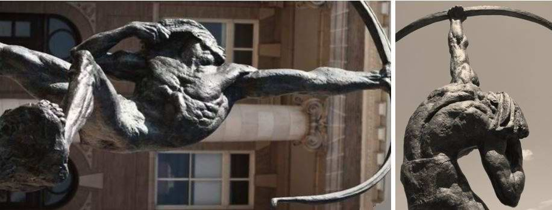
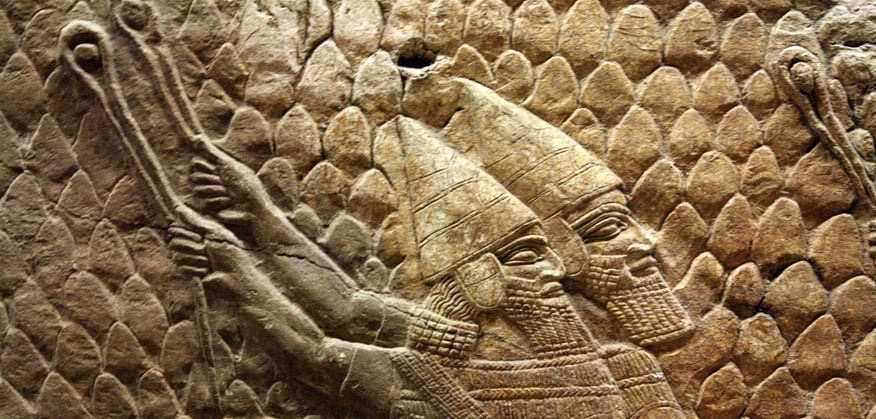
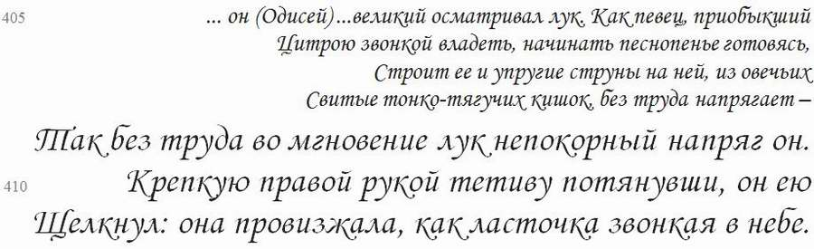
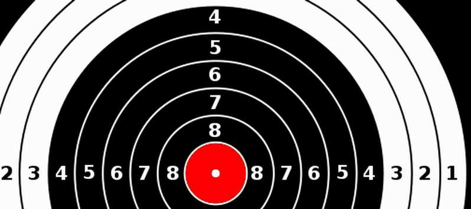
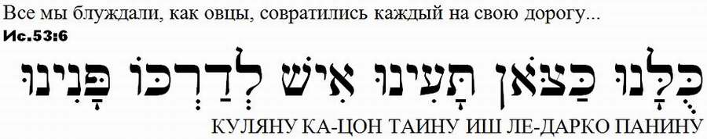

Прямое ПОПАДАНИЕ В ЦЕЛЬ
…и способность учить вложил в сердце его…
וּלְהוֹרֹת נָתַן בְּלִבּוֹ
У-ЛЕОРОТ НАТАН БЭ-ЛИБОИсх. 35:34О том, как найти в древнееврейском тексте Писания однокоренные слова см. здесь.

Слово «УЧИТЬ» встреченное нами в этом месте Писания – להורות /леорот (ивр.)/.
להורות / ירה / ЛЕОРОТ /ЯРА/ (03384): 1. бросать; 2. стрелять, пускать (стрелу); 3. орошать, давать пить, поить; 4. наставлять, учить, преподавать, указывать, распоряжаться, предписывать.
В статьях «Школа Бецалеля. ПРИЗВАНИЕ УЧИТЬ» и «Школа Бецалеля. РОДИТЕЛЬ» см. начало рассмотрения этого слова и слов, однокоренных ему, помогающих глубже вникнуть в суть процесса ЛЕОРОТ (ивр. – учить (Исх. 35:34)).
В этой статье рассмотрим слово ЙОРЭ /стрелок/.
Стрелять, значит - посылать в цель. Такое токование следует из значения этого корня "ירה" (юд – рэйш – hей). Стрелять, значит - посылать /стрелу/ с большой силой, придав ей направление.
1. ЦЕЛЬ.
Стрела всегда имеет цель, которую ей надлежит достигнуть. Не случайно, леорот – руководить, указывать. Т.е. само действие - ЛЕОРОТ (учить), содержит в себе направленность и цель.
Творец ничего не делает просто так. Всякое Его действие целенаправленно. Все творение имеет замысел и цель, как написано:
«Слово Мое, которое исходит из уст Моих, — оно не возвращается ко Мне тщетным, но исполняет то, что Мне угодно, и совершает то, для чего Я послал его».
כֵּן יִהְיֶה דְבָרִי אֲשֶׁר יֵצֵא מִפִּי לֹא־יָשׁוּב אֵלַי רֵיקָם
כִּי אִם־עָשָׂה אֶת־אֲשֶׁר חָפַצְתִּי וְהִצְלִיחַ אֲשֶׁר שְׁלַחְתִּיו׃
Жизнь человека, сотворенного по подобию Божию, несомненно имеет цель. Соответственно, творчество человека и его искусство также имеют цель.
В книге Судей (20:16) Библия говорит о меткости метания камня из пращи сынов Беньяминовых: «Из всего народа сего было семьсот человек отборных, которые были левши, и все сии, бросая из пращей камни в волос, не бросали мимо». Настолько точным было их попадание, настолько ясно они видели цель.
2. СИЛА ДОСТИЧЬ ЦЕЛЬ.

Стрелять, значит посылать /стрелу/ с большой силой.
Дальность стрельбы из современного лука - 90 м, весьма скромный результат в сравнении с древними стрелками. При этом усилие натяжения спортивного лука - около 20 кг.
Найденные археологами древние луки были гораздо мощнее. Сила их натяжения до 80 кг!.. Так что далеко не всякий крепкий современный мужчина мог бы с ним сладить.
Гомер в «Одиссее» свидетельствует об этом "тугосгибаемом луке Одиссеевом". Ни один из женихов Пенелопы не в состоянии был натянуть лук "многосильного мужа, каким был Одиссей". И в древней Греции это было под силу далеко не каждому.

3. СТРЕЛА ИСПОЛНЯЕТ ВОЛЮ СТРЕЛКА.

Это обстоятельство, пожалуй, не нуждается в специальных объяснениях. Понятно, что стрела не избирает себе цели по своему усмотрению, «но исполняет волю пославшего ее».
Интересно, что на иврите слово грешить сопряжено с утратой направления и, как следствие, -попаданием мимо цели:
ХАТА (грех) – букв. перевод: уклонение от цели. Если мы уклоняемся от цели, определенной для нас Творцом, то промазываем мимо цели, как сказано:

ЧТО ЖЕ СКАЖЕМ?
Когда мы говорим об УЧЕНИИ Бецалеля, исходя из глубокого значения этого слова להורות /ЛЕОРОТ (ивр.)/, мы открываем, что учение это имеет цель. И эта цель определяется Творцом, даровавшим Бецалелю способность УЧИТЬ. Учение это не имеет смысла, если не дает способность видеть цель. Оно же сообщает силу для достижения этой цели и дает направление движения к этой цели.
В следующем посте посмотрим на слова "МОРЭ" (учитель) - однокоренное слову "ЛЕОРОТ" (учить).
автор: Эфраим Калиш /TORAART/
ЕСЛИ ЭТОТ МАТЕРИАЛ БЫЛ ВАМ ПОЛЕЗЕН, ПОЖАЛУЙСТА, ПОДЕЛИТЕСЬ ИМ С ДРУЗЬЯМИ
другие статьи по теме: